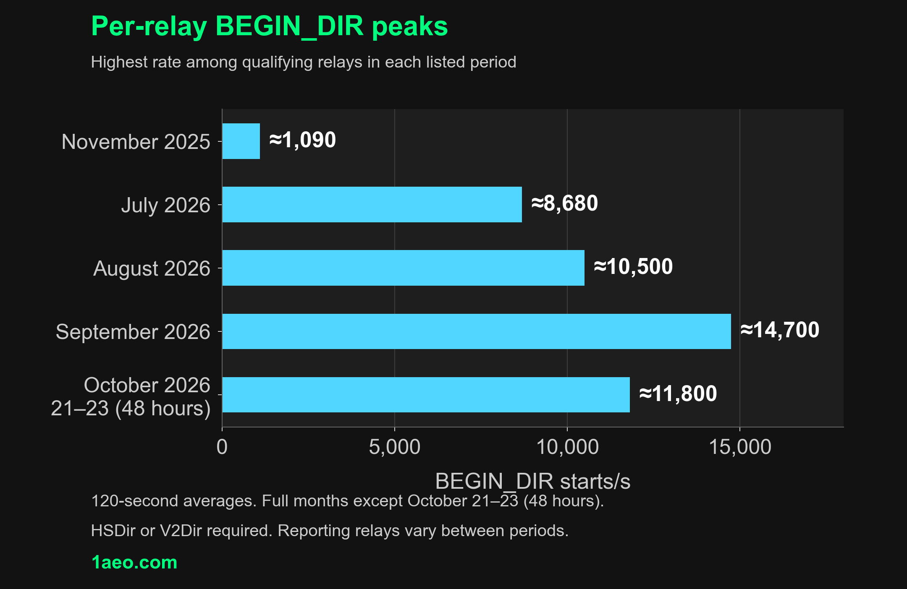
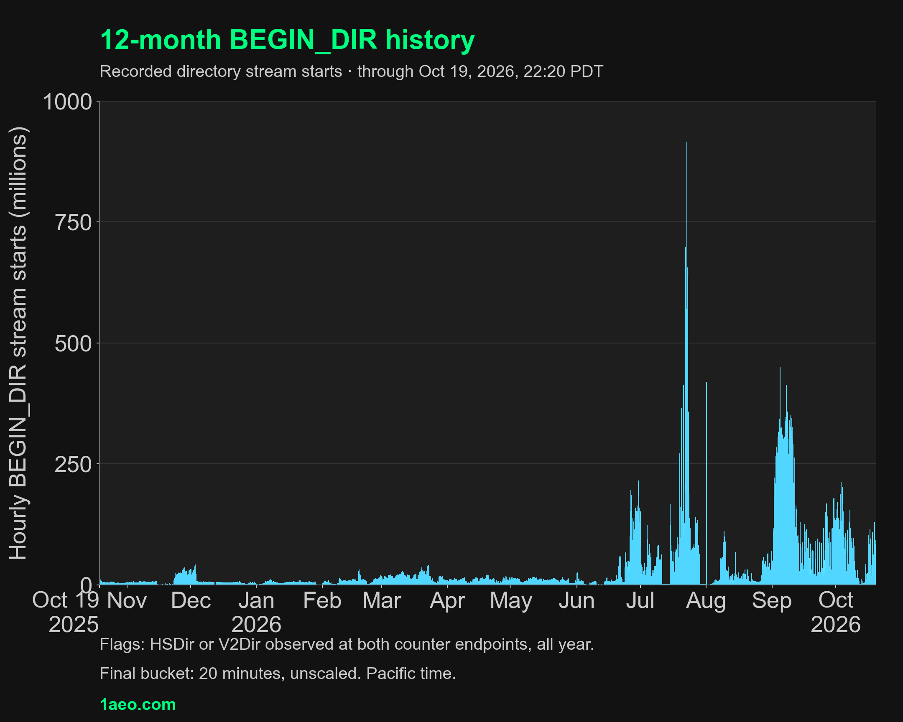
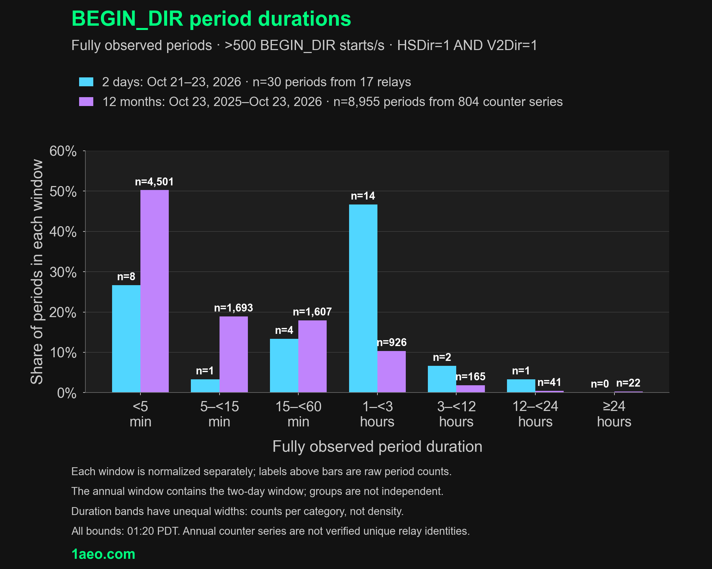
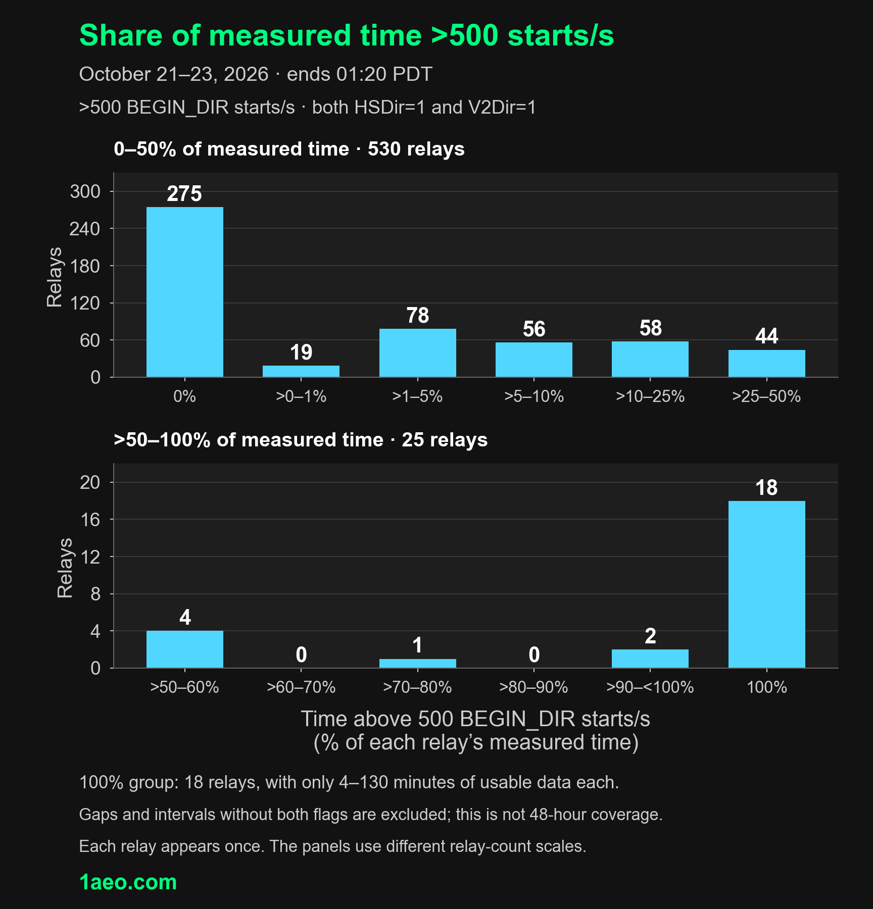

BEGIN_DIR Surges on Our Tor Relays
3.62 billion directory stream starts in just 48 hours. We recorded that BEGIN_DIR volume across 775 Tor relays reporting HSDir or V2Dir, in the window ending October 21, 2026, 01:00 EDT.
We assess these surges as likely denial-of-service traffic. The MetricsPort counter tor_relay_streams_total{type="BEGIN_DIR"}, collected by Prometheus, combines onion-service descriptor fetches (GET), uploads (POST) and other directory requests. It cannot distinguish request types or malicious intent.
Per-relay BEGIN_DIR peaks#
Filter: HSDir or V2Dir. Both peaks below are 120-second averages.
Highest per-relay peak among the periods checked: about 14,700 BEGIN_DIR starts/s in September 2026.
Most recent checked per-relay peak: about 11,800 BEGIN_DIR starts/s, in the 48 hours ending October 23, 2026, 01:20 PDT.

History over 12 months#
Filter: HSDir or V2Dir throughout counted intervals. Reporting relays vary.
Recorded history total: 240.86 billion BEGIN_DIR starts, from October 19, 2025 through October 19, 2026, 22:20 PDT.
Largest fleet hourly count: 916 million BEGIN_DIR starts, on July 22, 2026, 22:00–23:00 PDT.

Above 500 BEGIN_DIR starts/s#
Window: October 21, 01:20–October 23, 01:20 PDT, 2026. Filter: both HSDir and V2Dir throughout each counted interval. Rates are sample-interval averages.
Relays exceeding 500 BEGIN_DIR starts/s: 280 of 555 observed relays.
Maximum overlap: 46 relays with overlapping observations averaging >500 BEGIN_DIR starts/s.
Duration above 500 BEGIN_DIR starts/s: median 74 minutes, longest 22 hours 22 minutes, among 30 fully observed periods. Another 617 periods had an unobserved start or end.
Repeat surges: 4 relays returned above 500 BEGIN_DIR starts/s 14 times, after continuously observed periods at or below that rate.
Duration distributions: two days and twelve months#

Share of measured time#

Metrics Used#
| Measurement | MetricsPort selector |
|---|---|
| BEGIN_DIR starts | tor_relay_streams_total{type="BEGIN_DIR"} |
| Relay flags | tor_relay_flag{type="HSDir"} and tor_relay_flag{type="V2Dir"} |
Scroll the table horizontally to view all columns.
Counts sum adjacent counter differences, excluding detected resets, source changes, failed scrapes and gaps over 180 seconds. Relay counts use verified identities. Fully observed periods require adjacent observations at or below 500 BEGIN_DIR starts/s on both sides. Counting code.